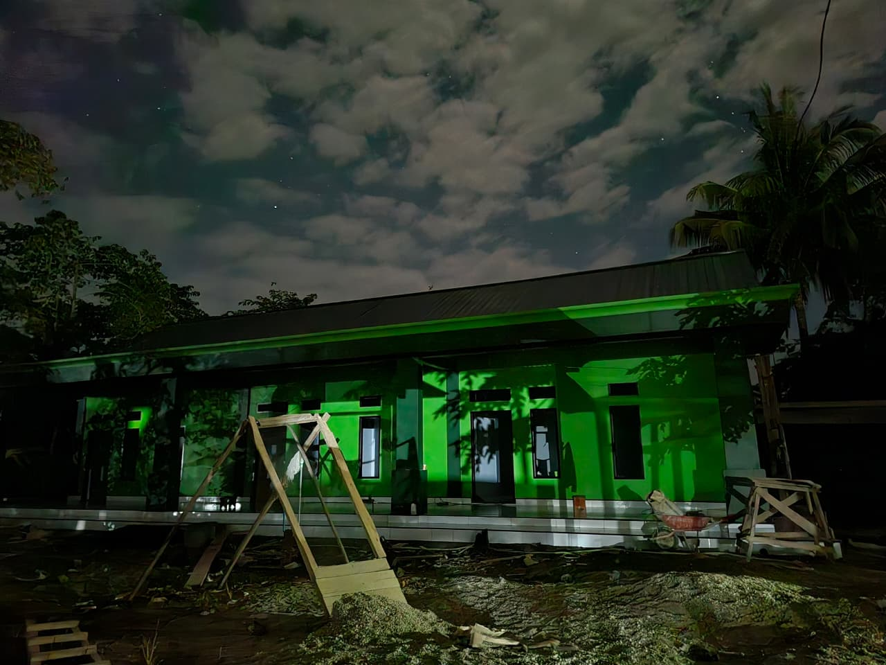
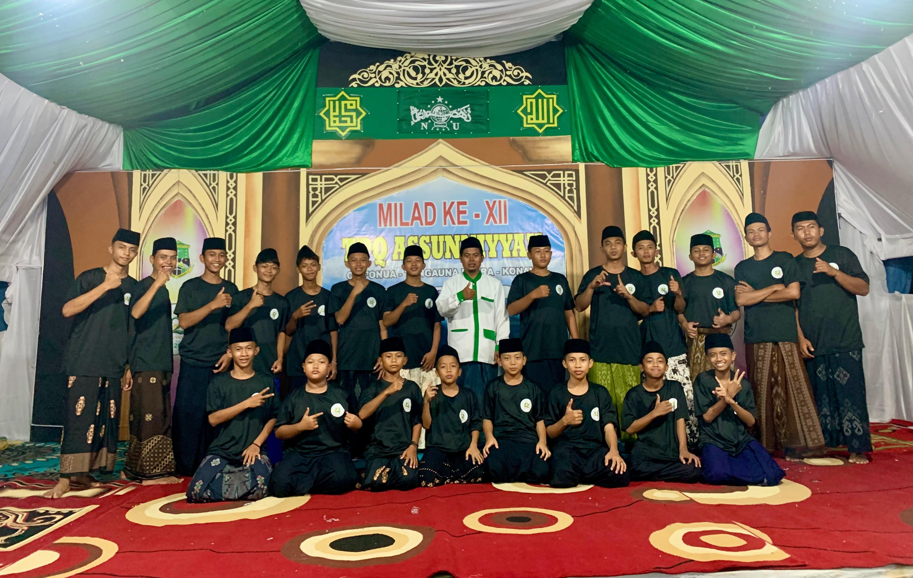
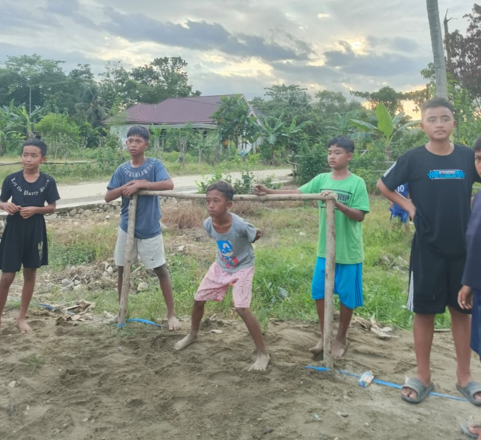
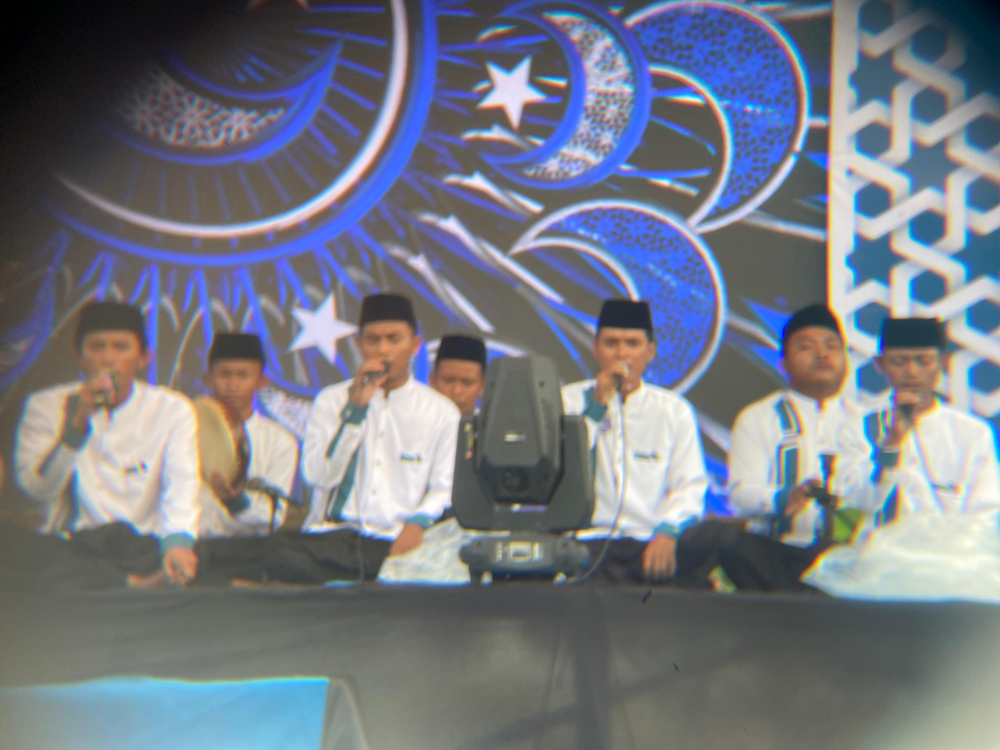
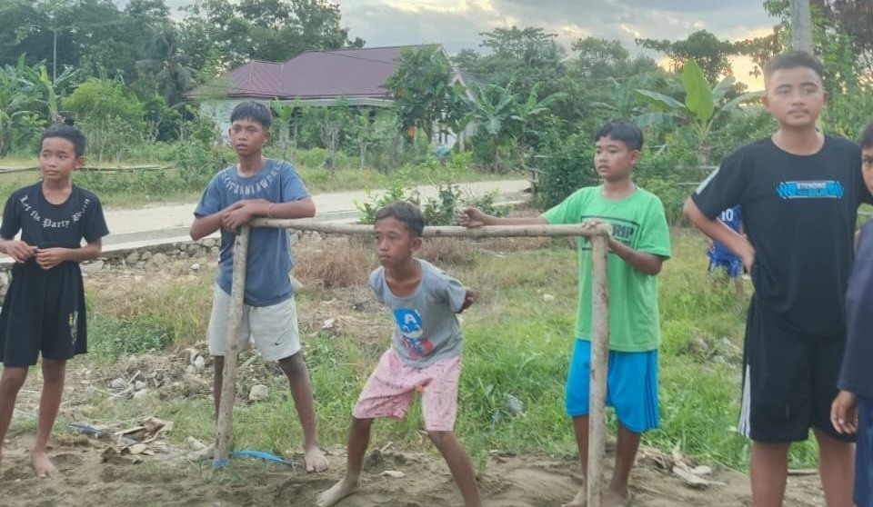
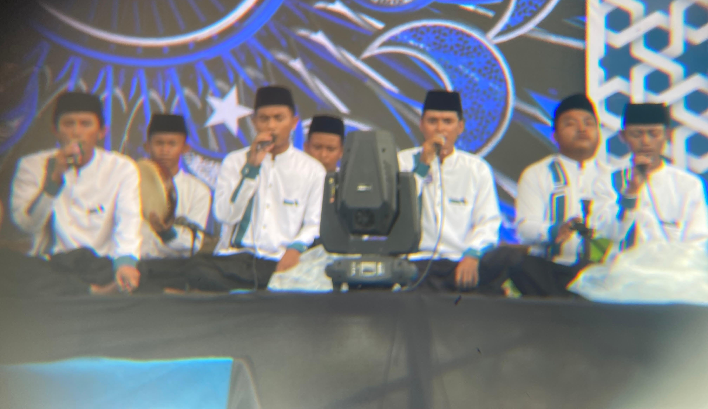
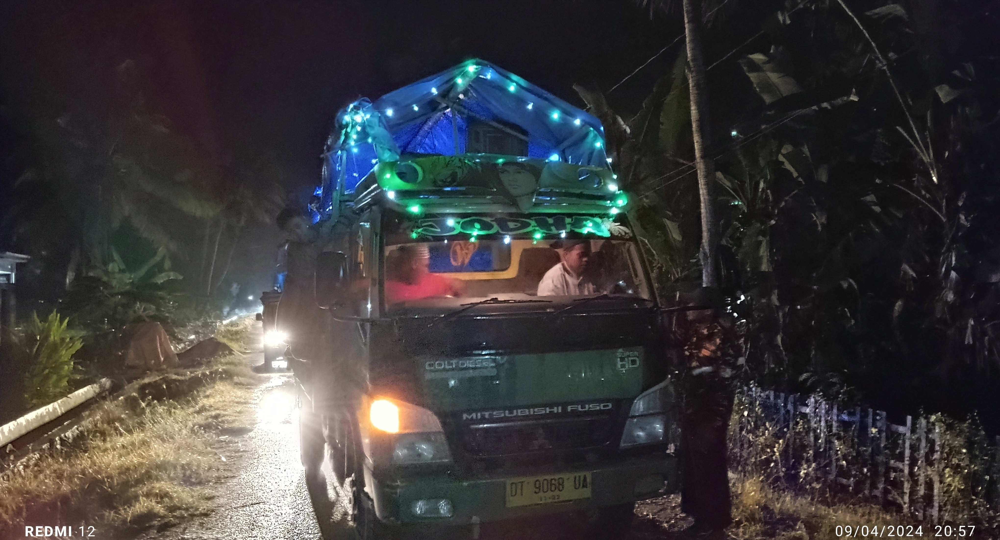

Puncak Milad Ke XII
Foto bersama anggota Hadroh Assunniyyah Sultra pada malam puncak milad ke XII TPQ Assunniyyah Sultra.
"Membentuk Generasi Qur'ani yang Beriman, Berilmu, Berakhlakul Karimah dan Cinta Rasulullah ﷺ"
TPQ Assunniyyah Sultra merupakan lembaga pendidikan Islam yang berkomitmen mencetak generasi Qur'ani, berakhlakul karimah, berilmu, bertaqwa serta mencintai Al-Qur'an dan Rasulullah ﷺ.


Assalamu'alaikum Warahmatullahi Wabarakatuh. Selamat datang di Website Resmi TPQ Assunniyyah Sultra. Semoga website ini menjadi media dakwah, informasi dan silaturahmi bagi seluruh santri, wali santri serta masyarakat.
Data singkat mengenai perkembangan TPQ Assunniyyah Sultra.
Santri Aktif
Guru TPQ
Anggota Hadroh
Tahun Berdiri

Grup Hadroh Assunniyyah Sultra aktif mengisi pengajian, maulid, pernikahan, khitanan, serta berbagai kegiatan keagamaan lainnya.
Jadwal latihan rutin Grup Hadroh Assunniyyah Sultra.
20.30 - 22.00 WITA
TPQ Assunniyyah Sultra
20.30 - 22.00 WITA
TPQ Assunniyyah Sultra
Berbagai kegiatan dan agenda terbaru TPQ & Hadroh Assunniyyah Sultra.

Foto bersama anggota Hadroh Assunniyyah Sultra pada malam puncak milad ke XII TPQ Assunniyyah Sultra.

Lomba Mini Soccer Santri TPQ Assunniyyah Sultra Dalam rangka Milad KE XII Tahun 2026.

Lomba hadroh Se-Sultra Tahun 2026 Dalam rangka 1 abad NU.
Dokumentasi kegiatan TPQ dan Hadroh Assunniyyah Sultra.






Silakan kunjungi TPQ & Hadroh Assunniyyah Sultra untuk mendapatkan informasi dan mengikuti kegiatan bersama kami.
Klik tombol di bawah untuk membuka lokasi TPQ & Hadroh Assunniyyah Sultra melalui Google Maps.
Buka Google Maps